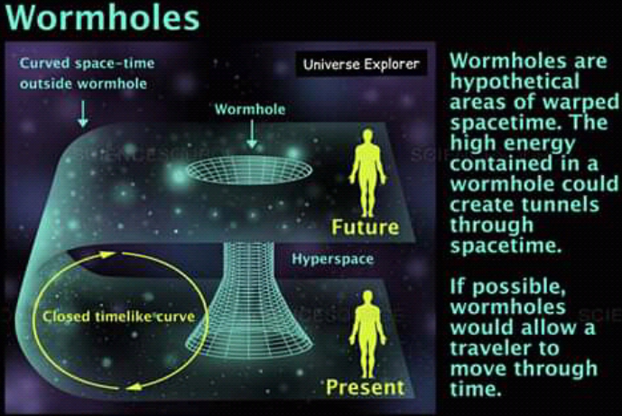
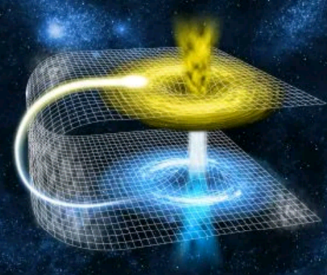

DEVELOPED BY ROBERT ZULU THE PROFESSIONAL PROGRAMMER
WORMHOLE
The wormhole theory postulates that a theoretical passage through space-time could create shortcuts for long journey across the universe. Wormholes are predicted by the theory of general relativity. But be wary: wormholes brings with them the dangers of sudden collapse, high radiation and dangerous contact with exotic matter.
Wormhole Theory
Wormholes were first theorized in 1916, through that wasn't what they were called at the time. While reviewing another physicist' solution to the equations Albert Einstein's theory of general relativity, Austrian physicist Ludwig Flamm realized another solution was possible. He described a "white hole." a theoretical time reversal of a black hole. Entrances to both black and white holes could be connected by a space-time conduit.
In 1935, Einstein and physicist Nathan Rosen used the theory of general relativity to elaborate on the idea, proposing the existence of "bridges" thorough space-time. These bridges connect two different points in space-time, theoretically creating a shortcut that could reduce travel time and distance. The shortcuts come to be called Einstein-Rosen bridges,or wormhole
"The Whole thing very hypothetical at this point," said Stephen Hsu,a professor of theoretical physics at the University of Oregon, told our sister site, LiveScience "No one thinks we're going to find a wormhole anytime soon."
Through The Wormhole
Sciece fiction is filled with tales of traveling through
wormholes. But the reality of such travel is more
complicated, and not just because we've yet to spot one.
The first problem is size. Primordial wormhole are predicted to exist on
microscopic levels. However,as the universe expands, it is
possible that some may have been stretched t larger sizes.
Another problem comes from stability. The predicted Einstein-Rosen wormholes
would be useless for travel because they collapse quickly.
"You would need some very exotc type of matter in order
to stabilize a wormhole," said Hsu," and it's not clear
whether such matter exists in the universe."
But more recent research found that a wormhole containing "exoic"
matter could stay open and unchanging for longer periods of time.
Exotic matter, which should not be confused with dark matter or
antimatter, contains negative energy density has only been
seen in the behavior of certain vacuum states as part
of quantum field theory.
If a wormhole contained sufficient exotic matter, whether
naturally occurring or artificially added, it could
theoretically be used as a method of sending information
or travelers through space. Unfortunately, human journeys
through the space tunnels is not possible for now maybe in 500 years from now.